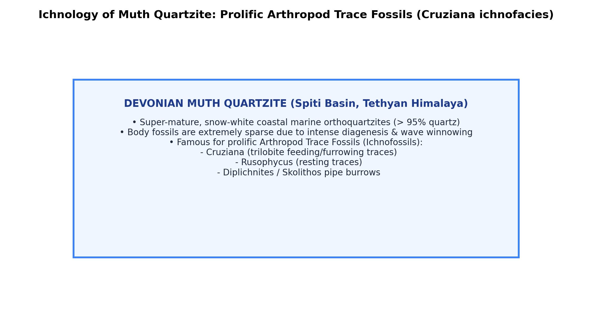

Q049: Muth Quartzite: Devonian Arthropod Trace Fossils (Cruziana)
The Muth Quartzite (named after the village of Muth in the Pin Valley of Spiti, Himachal Pradesh, by Ferdinand Stoliczka in 1865) represents the most conspicuous, widely traceable, and visually spectacular lithostratigraphic marker bed across the entire Tethyan Himalayan Paleozoic succession from Kashmir, Spiti, Kinnaur, and Garhwal to Nepal and Bhutan:
- Lithological Characteristics: A remarkably uniform, massive, snow-white to light-grey, cliff-forming super-mature quartz arenite / orthoquartzite ($150-300\text{ m}$ thick). Composed of $>98\%$ monocrystalline quartz grains that are extremely well-rounded, well-sorted, and cemented by syntaxial siliceous quartz overgrowths, with secondary dolomitic and calcareous patches near the top.
- Stratigraphic Position & Age: Overlies the Silurian Sanugba Group (Takche Formation coral limestones) and underlies the Lower Carboniferous Lipak Formation (fossiliferous crinoidal limestone). Its chronostratigraphic age is established as Early to Middle Devonian.
- Depositional Setting: Represents high-energy coastal barrier-beach complexes, tidal shoals, and shallow subtidal-to-intertidal sand sheets deposited along the northern passive continental margin of eastern Gondwanaland facing the Paleo-Tethys Ocean.

Because intense wave agitation in high-energy quartz beach regimes destroyed delicate body fossils (shells and carapaces), the Muth Quartzite is almost devoid of macro-invertebrate body fossils. However, it preserves an outstanding and biostratigraphically diagnostic suite of arthropod trace fossils:
Constructed by benthic marine arthropods (trilobites, aglaspidids, or eurypterids) dragging paired appendages across shallow-water sand beds.
- Cruziana (Ribbon-like Crawling Traces): Bilobed, furrowed crawling and feeding trails (pascichnia) showing distinctive chevron-patterned scratch marks made by the rhythmic digging of arthropod endopodites as they ploughed through the sand in search of detritus.
- Rusophycus (Resting Traces): Bilobed, coffee-bean shaped excavations (cubichnia) formed when the arthropod settled onto the sand bed and excavated a temporary resting burrow.
- Diplichnites & Dimorphichnus: Trackways composed of two parallel rows of individual walking dot/dash footprints produced during rapid locomotion.
- Authoritative Classification: All these diagnostic trace fossils are created exclusively by the phylum Arthropoda (primarily Trilobita and primitive marine chelicerates).

| Formation | Geological System / Age | Dominant Rock Type | Primary Fossil Content & Category |
|---|---|---|---|
| Lipak Formation | Early Carboniferous (Tournaisian-Visean) | Crinoidal limestones and dolomites. | Brachiopods (Syringothyris cuspidata), crinoids, rugose corals. |
| Muth Quartzite | Early to Middle Devonian | Snow-white, pure orthoquartzite. | Arthropod Trace Fossils (Cruziana, Rusophycus, Diplichnites). |
| Takche Formation | Silurian (Llandovery-Ludlow) | Coralline limestones, calcareous mudstones. | Tabulate corals (Favosites, Halysites), brachiopods (Pentamerus). |
| Shian Formation | Late Ordovician | Reddish-brown quartzites and conglomerates. | Brachiopods (Orthis), solitary corals. |
| Kunzum La Formation | Cambrian | Greenish shales, siltstones, quartzites. | Trilobite body fossils (Redlichia noetlingi, Ptychoparia). |
Detailed Paleontological Forensic Analysis:
- The Muth Quartzite of the Spiti Valley (Himachal Pradesh) is composed of mature, high-energy marine quartz arenite. Due to intense wave churning, calcareous shells of marine organisms were completely ground to sand; however, bedding surfaces preserve magnificent ichnofossils (trace fossils).
- The dominant, world-renowned trace fossils documented from the Muth Quartzite are Cruziana, Rusophycus, and Diplichnites (Bhargava & Bassi 1998; Bagati & Thakur 1993; Seilacher 2007).
- In biological taxonomy, Cruziana (furrowed crawling/scratch trails) and Rusophycus (bilobed resting excavation nests) were produced by benthic Arthropods (specifically marine trilobites, eurypterids, or phyllocarid crustaceans) raking their paired walking appendages through the sand.
- Therefore, Option (D) Arthropod is the scientifically precise, definitive correct answer.
Detailed Refutation:
- Nautilus is a modern genus of coiled cephalopod molluscs (Class Cephalopoda). It represents a body fossil (calcareous shell), not a trace fossil.
- Furthermore, true Nautilus did not exist in the Devonian, and cephalopods do not make bilobed crawling trace burrows in sandstones.
Detailed Refutation:
- Unio is a genus of freshwater unionid bivalve molluscs that evolved much later in the Mesozoic and Cenozoic. It is a body fossil organism living in continental rivers and lakes, not a Paleozoic marine trace fossil.
Detailed Refutation:
- Pelecypoda (Bivalvia) is a taxonomic class of molluscs having bivalved shells. While bivalves can produce resting traces (e.g., Lockeia), the primary diagnostic ichnogenus documented and classically celebrated from the Muth Quartzite is Cruziana, which is exclusively formed by arthropods, not pelecypods.
| Ethological Category | Biological Behavior | Characteristic Ichnogenera | Typical Producing Organism |
|---|---|---|---|
| Cubichnia | Resting traces made while stationary. | Rusophycus, Lockeia, Asteriacites. | Arthropods (Trilobites), Bivalves, Ophiuroids (Brittle stars). |
| Pascichnia | Locomotion combined with active deposit-feeding. | Cruziana, Helminthopsis, Phycosiphon. | Arthropods, Deposit-feeding marine worms. |
| Repichnia | Pure directed crawling / walking locomotion traces. | Diplichnites, Dimorphichnus, Cruziana. | Arthropods, Gastropods, Vertebrates. |
| Fodinichnia | Subsurface semi-permanent feeding burrows. | Thalassinoides, Planolites, Ophiomorpha. | Decapod crustaceans, polychaete annelids. |
| Domichnia | Permanent dwelling cylindrical tubes / borings. | Skolithos, Arenicolites, Trypanites. | Suspension feeders, phoronids, tube-dwelling worms. |
Explain the morphological and behavioral distinction between Cruziana and Rusophycus on a sandstone bedding plane.
Step-by-Step Solution:
- Cruziana (Pascichnia / Repichnia): Elongate, continuous, ribbon-like bilobed trail exhibiting a central longitudinal groove flanked by two lateral lobes covered in chevron-like scratch marks. Formed by an arthropod actively crawling and ploughing forward through sediment.
- Rusophycus (Cubichnia): Isolated, ovate to coffee-bean shaped, bilobed excavation nest reflecting the exact dimensions of the stationary organism. Formed when the arthropod halted and dug itself into the substrate for concealment or resting.
Which standard Seilacherian marine ichnofacies is represented by the Cruziana-Skolithos assemblage in the Muth Quartzite, and what bathymetric zone does it define?
Step-by-Step Solution:
It represents the Cruziana Ichnofacies grading shoreward into the Skolithos Ichnofacies. The Cruziana ichnofacies characterizes shallow subtidal continental shelf regimes situated between the daily fair-weather wave base and the storm wave base (water depths typically $5-50\text{ m}$), with moderate wave energy, fine-to-medium sand substrates, and abundant benthic nutrients.
The Muth Quartzite has a quartz index $>98\%$ and a rounded grain roundness index $>0.6$. What chemical and mechanical processes produce such super-mature quartz arenites?
Step-by-Step Solution:
Such extreme quartz purity requires: (1) Intensely warm, humid, tropical chemical weathering of the crystalline source landmass (destroying all unstable feldspars, micas, and ferromagnesians); (2) Prolonged eolian or polycyclic abrasion rounding the resistant quartz grains; and (3) Extensive marine beach and shoreface wave winnowing that completely strips out fine clay matrix.
Why can Cruziana serve as an effective biostratigraphic tool ("Cruziana Stratigraphy" of Adolf Seilacher) in Lower Paleozoic rocks devoid of body fossils?
Step-by-Step Solution:
Because the paired walking appendages (endopodites and exopodites) of trilobites underwent rapid morphological evolution throughout the Cambrian, Ordovician, Silurian, and Devonian, the precise angle, spacing, bundling, and symmetry of the claw scratches on the lobes of Cruziana change systematically through geological time, allowing species-level ichnostratigraphic biozonation.
Where is the historical type section of the Muth Quartzite located, and who first designated it?
Step-by-Step Solution:
The type locality is situated near the village of Muth (Mudh) along the Pin River in the Spiti Valley, Lahaul & Spiti District of Himachal Pradesh. It was first named and described by the pioneering Austro-Czech paleontologist Ferdinand Stoliczka in 1865.
What formation directly overlies the Muth Quartzite in the Spiti Valley, and what major fossil group marks its base?
Step-by-Step Solution:
The Muth Quartzite is conformably overlain by the Lipak Formation (Kanawar Group) of Early Carboniferous (Tournaisian-Visean) age. Its base is composed of dark, bituminous, fossiliferous limestones packed with the diagnostic spiriferid brachiopod Syringothyris cuspidata and crinoid columnals.
Why are trace fossils preserved in high-energy quartz arenites where body fossils are absent?
Step-by-Step Solution:
Body fossils are composed of soluble mineral phases (aragonite, calcite, chitin) that are easily dissolved by acidic pore waters or mechanically pulverized by surf waves in porous sands. In contrast, trace fossils are sedimentary structures (topographic reliefs in the rock fabric itself) cast by sand and cemented during diagenetic quartz syntaxial overgrowth, making them immune to post-depositional carbonate dissolution.
In which structural-tectonic zone of the Himalayas does the Muth Quartzite occur: Sub-Himalaya, Lesser Himalaya, Higher Himalaya, or Tethyan Himalaya?
Step-by-Step Solution:
It occurs exclusively within the Tethyan (Tibetan) Himalayan Zone, situated north of the Main Central Thrust (MCT) and Higher Himalayan Crystalline basement, bounded to the north by the Indus-Tsangpo Suture Zone (ITSZ).